ویژگیهای فنی و عملکرد
برد SBM_256 یک ماژول شارژر هوشمند باتری 1 تا 4 سل است که علاوه بر شارژ هوشمند باتری، منابع ورودی و خروجی را نیز مدیریت میکند و با برنامه تحت وب خود امکان دیدن وضعیت سیستم و تغییر پارامترهای شارژ و سیستم را فراهم میکند.
ESP32پردازنده و رابط وب
NVDCقطع باتری زمان پر بودن
DPMمدیریت توان ورودی
ADCمانیتورینگ ولتاژ و جریان
POWERPATHسوییچ بدون خاموشی
نکات برجسته
- پشتیبانی از پردازنده قدرتمند ESP32
- تصویرسازی مسیر توان (Power Path Visualization) به صورت زنده
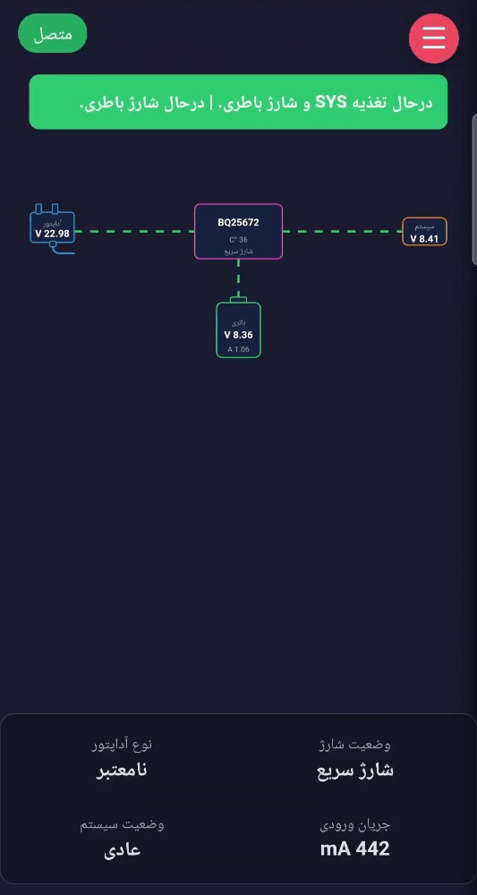
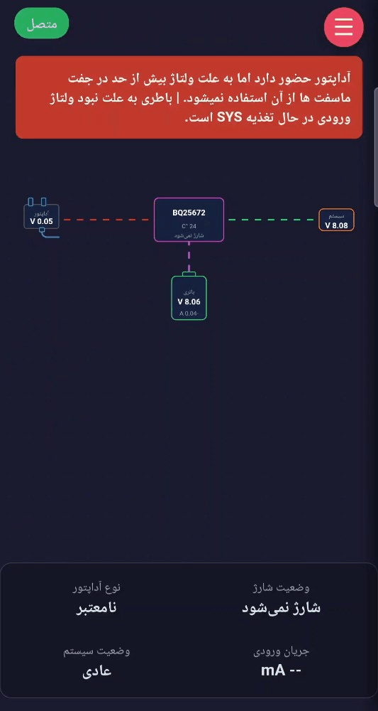
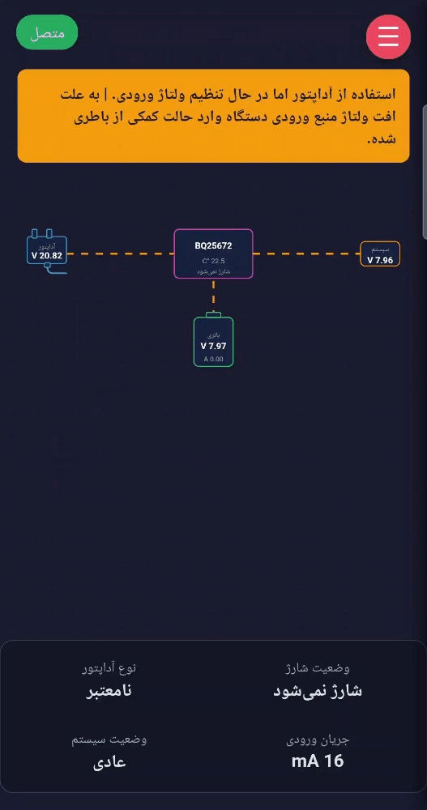
- مدیریت آسان و تحت وب رجیسترها
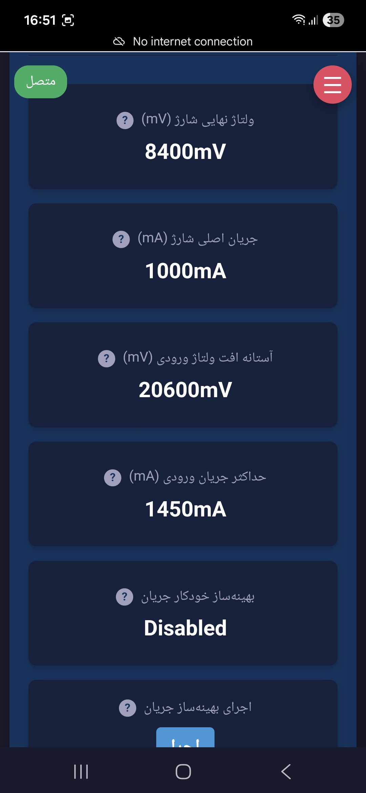
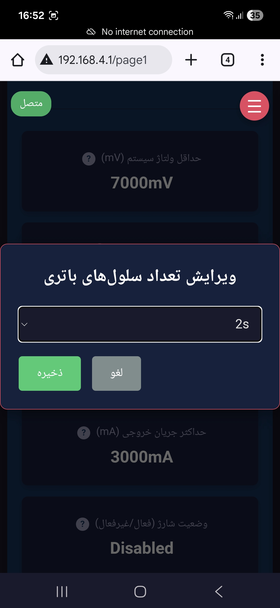
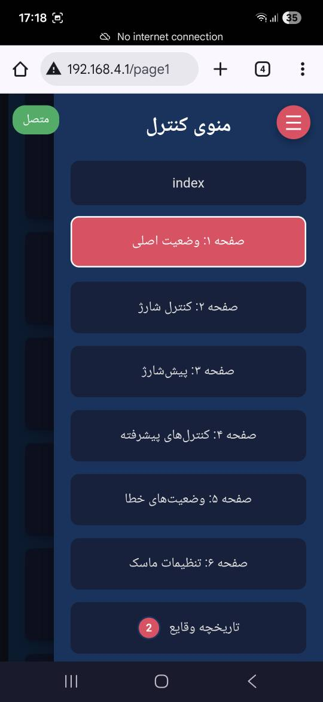
- اتصال باتری 1 تا 4 سل (تا 18.8V)
- منبع تغذیه ورودی از 3.6V تا 24V
- خروجی، از کمترین مقدار ولتاژ باتری 0 تا 19V
- حداکثر جریان خروجی در حالت آداپتور تا 5A (توصیه شده و مجاز) و 6A در حالت باتری (تا 10A برای 1 ثانیه) و 11A در حالت استفاده از هر دو
- حداکثر توان خروجی در حالت آداپتور 95W و در حالت باتری 112.8W و در حالت استفاده از باتری و آداپتور 207.8W
- جریان مصرفی در حالت خواب 500nA و در حالت ship mode (نیمهخواب) 17uA
- کار در دمای -40 تا +85 درجه سانتیگراد
- دارای قابلیت خودکار و دستی (با استفاده از I2C)

- امکان تغییر پارامترهای شارژ و مانیتورینگ جریان و ولتاژ و وضعیت کلی توسط برنامه تحت وب با ESP32
- 96.5% بهرهوری در زمان شارژ باتری 4 سل و جریان شارژ 3A و ولتاژ ورودی 20V
- امکان اتصال همزمان دو آداپتور
- ساپورت انواع ولتاژ ورودی
- اندازهگیری ولتاژ بدون بار و استفاده از الگوریتم MPPT برای شارژ با پنلهای خورشیدی
- 3.6V تا 24V ورودی با حداکثر ولتاژ ورودی تا 30V
- امکان اندازهگیری حداکثر توان آداپتور ناشناس همراه با قابلیت DPM برای کنترل ولتاژ و جریان منبع ورودی
- تشخیص USB BC1.2، HVDCP و آداپتورهای غیر استاندارد
- دارای Narrow Voltage DC (NVDC) Power Path برای استفاده از آداپتور یا باتری یا هر دو برای تغذیه خروجی و سوئیچ بین آنها بدون خاموشی خروجی.
- امکان تغذیه ورودی در حالت OTG با مبدل buck-boost از 2.8V تا 22V با حداکثر جریان 2A
- دارای مبدل آنالوگ به دیجیتال ADC برای مانیتورینگ ولتاژ و جریان و دما در ورودی و خروجی و باتری و خود آیسی
- دارای 20 محافظ
- اضافهولتاژ و جریان در ورودی و خروجی و باتری و مبدل درون آیسی
- دمای باتری
- دمای آیسی
- تایمر امنیتی شارژ
- امکان اتصال ESP32 به برد و راهاندازی برنامه تحت وب برای مدیریت و مشاهده وضعیت و مسیرهای بین آداپتور، باتری و خروجی به صورت رایگان
گالری تصاویر برد
برای مشاهده سایز اصلی و انیمیشنها، روی تصاویر زیر کلیک کنید:
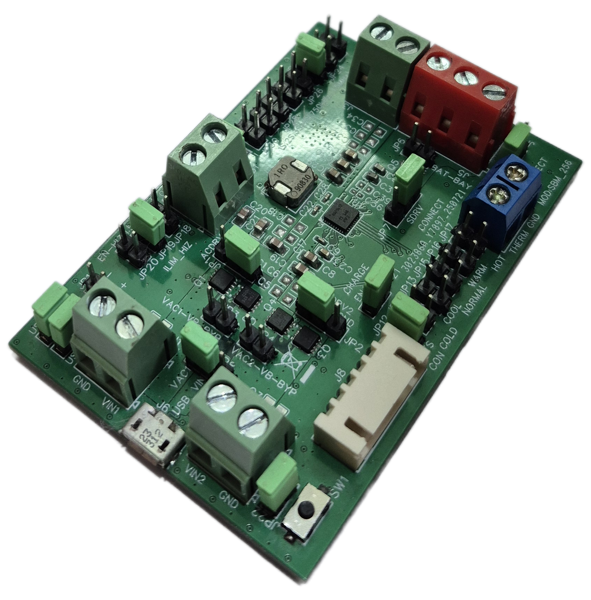
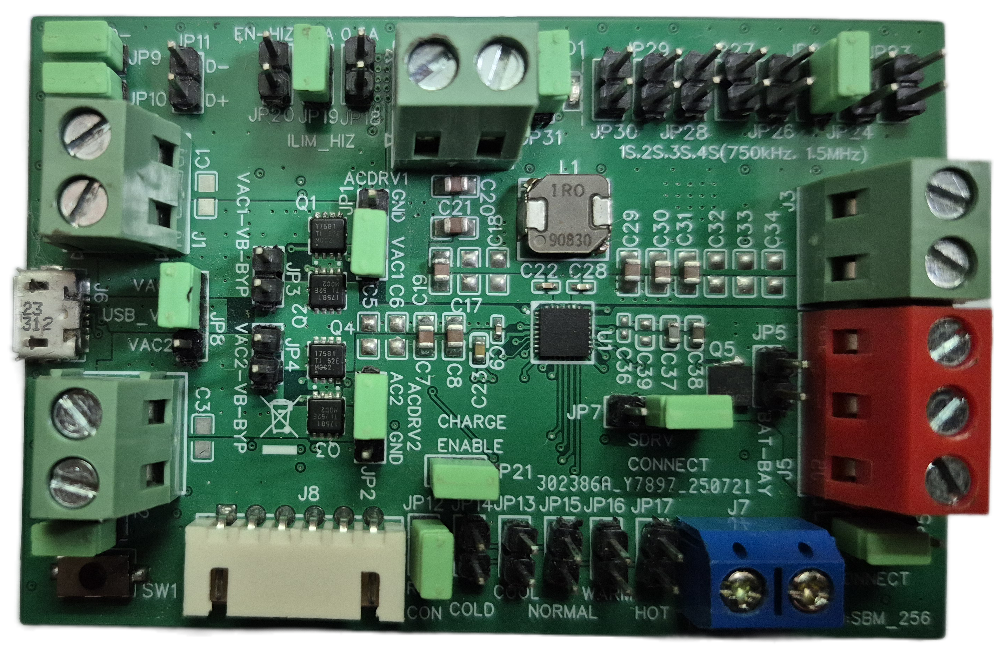
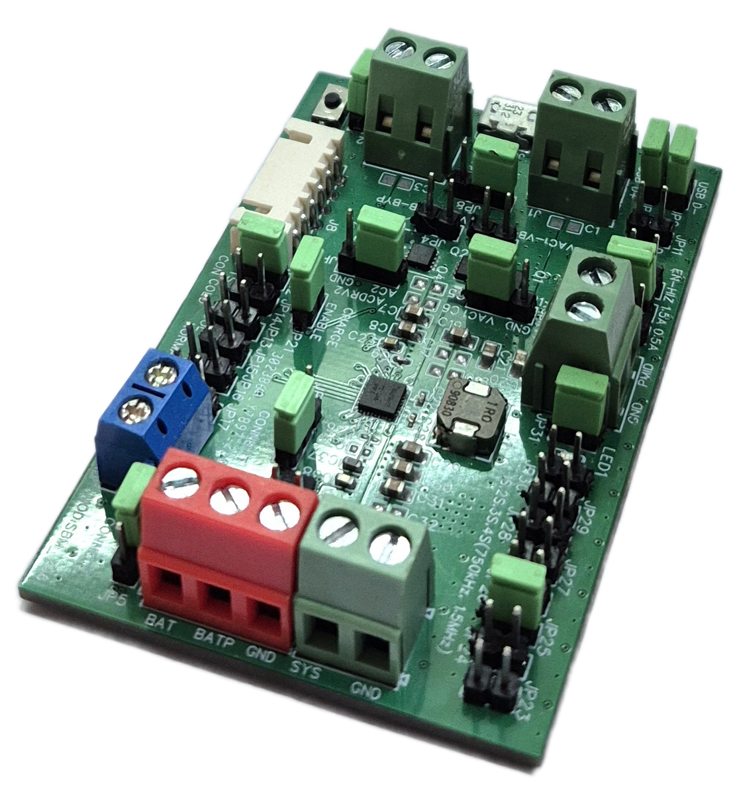
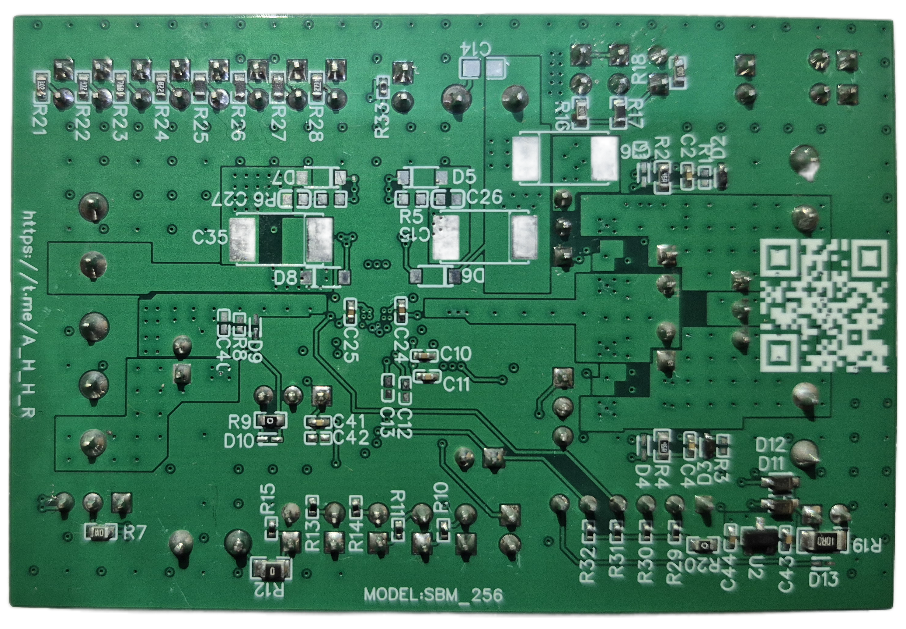
کاربردها
این ماژول در هر دستگاهی که باتری لیتیوم و لیتیوم-یون دارند قابل استفاده است.


- ⚡هر دستگاهی که بخواهد در زمان قطع ناگهانی منبع تغذیه ورودی یا باتری بدون ریست شدن به کار خود ادامه دهد.
- 🔋هر دستگاه باتریخوری که نیاز به مدیریت منابع ورودی (باتری، آداپتور، پنل خورشیدی) و مانیتورینگ آنها را دارد.
- 🤖رباتیک
- 🌐IOT
- 🔌پاور بانک
- 🧠تغذیه بردهای دارای MCU
- 🏠خانه هوشمند
- 📦شارژر پرتابل باتری لیتیوم-یون
- ☀️شارژر خورشیدی برای پک باتری
- ⚙️ایستگاه شارژ قابلحمل
- 🛡️سیستم UPS کوچک برای مودم
- 📶روتر قابلحمل با باتری پشتیبان
- 🛰️گیتوی IoT با منبع برق و باتری
- 🌿نود سنسوری فضای باز
- 🗄️دیتالاگر صنعتی باتریخور
- 🌡️دستگاه مانیتورینگ دما و رطوبت
- 📍ردیاب GPS
- 🚗تلهماتیک خودرو
- 📷دوربین امنیتی باتریخور
- 🌾دوربین پایش مزرعه
- 💡چراغ اضطراری هوشمند
- 🏕️چراغ کمپینگ شارژی
- 🔊اسپیکر پرتابل
- 🎚️آمپلیفایر پرتابل
- 🖥️نمایشگر قابلحمل
- 🏥دستگاه ثبت داده پزشکی
- ❤️دستگاه ECG قابلحمل
- 📈مانیتور علائم حیاتی سیار
- 🩺ابزار تشخیص پزشکی باتریخور
- 🔍اسکنر دستی
- 🖨️پرینتر پرتابل کوچک
- 💳ترمینال فروش سیار
- 🧾دستگاه پوز قابلحمل
- 🏪کیوسک کوچک باتریدار
- 🏭کنترلر صنعتی با بکاپ باتری
- 🎛️پنل کنترل قابلحمل
- 🧰ابزار اندازهگیری دستی
- 📏مولتیمتر حرفهای شارژی
- 📉اسیلوسکوپ دستی
- 🧪لاجیک آنالایزر پرتابل
- 🛠️تجهیزات تست و کالیبراسیون
- 🤖ماژول شارژ برای ربات متحرک
- 🧠ربات آموزشی با پک باتری
- 🚙ربات خدماتی کوچک
- 🛰️پهپاد زمینی (UGV)
- 🌞سیستم ذخیره انرژی خورشیدی کوچک
- 🔋پاوراستیشن مینی
- 📦داک شارژ تجهیزات پرتابل
- 🔗هاب USB باتریدار
- 🔄مبدل تغذیه باتری به USB-C
- 🎓کیت توسعه الکترونیکی آموزشی
- 🧪برد آزمایشگاهی چندمنظوره
- ⌚لوازم پوشیدنی صنعتی
- 🏷️دستگاه ردیابی دارایی
- 🔧ماژول بکاپ برق برای تجهیزات شبکه
دیگر قابلیت ها و توضیحات تکمیلی
این بخش خلاصهای از قابلیتهای کنترلی، حفاظتی، شارژ هوشمند و مانیتورینگ کامل ماژول را نشان میدهد.


- این ماژول علاوه بر امکان کنترل و مانیتور کاربر از طریق رابط تحت وب یا I2C، بهصورت خودکار نیز کار میکند.
- از باتری، ورودی (آداپتور)، خروجی و خود برد محافظت میکند و دارای 20 نوع محافظ است:
- اضافه ولتاژ و جریان ورودی
- تشخیص آداپتور ضعیف
- تشخیص نوع آداپتور ورودی
- اضافه ولتاژ و جریان باتری
- دمای باتری
- اضافه ولتاژ و جریان خروجی
- دمای خود IC
- ...

- تشخیص نوع آداپتور ورودی. دانستن نوع منبع تغذیه در ورودی باعث میشود از حداکثر توان منبع تغذیه استفاده شود بدون اینکه به آن آسیب برسد.
- آداپتور ناشناس: مثل تغذیههای 12 یا 24 ولت یا هر تغذیه دیگری که غیر از پورت MICRO-USB روی برد به برد متصل شود.
- SDP: پورتهای معمولی USB روی کامپیوترها و لپتاپهای قدیمیتر.
- CDP: پورتهای USB روی مانیتورهای مدرن یا پورتهای دیتای داخل خودروهای جدید.
- DCP: شارژرهای دیواری USB دار معمولی.
- HVDCP: شارژرهای امروز گوشیهای هوشمند که قابلیت Fast Charge دارند. در این حالت ماژول SBM_256 با شارژر وارد مکالمه میشود تا ولتاژ را از 5 ولت به 9 یا 12 ولت افزایش دهد تا توان بیشتری دریافت شود.
- آداپتورهای غیر استاندارد که از طریق مقاومت روی پایههای D+ و D- میزان جریان قابل ارائه خود را گزارش میدهند.

- امکان تشخیص حداکثر توان منبع ورودی یک منبع تغذیه نامشخص. با فعال کردن گزینه ICO توسط کاربر در پنل، ماژول بهطور خودکار توان آداپتور را تشخیص میدهد و از جریانکشی بیش از حد یا استفاده نکردن از تمام توان جلوگیری میکند.


- امکان اتصال دو آداپتور. (هر دو آداپتور، یکی آداپتور و یکی شارژر گوشی، یکی پنل خورشیدی و یکی آداپتور و ... هر ترکیبی میتوان ایجاد کرد)


- امکان اتصال پنل خورشیدی و مدیریت آن با استفاده از MPPT، بدون هیچ برد یا ماژول اضافهای.
- با فعالسازی این قابلیت در برنامه تحت وب، شارژر بهطور خودکار توان ورودی را اندازهگیری میکند تا:
- در زمان نور بیشتر، توان بیشتری بکشد برای شارژ باتری یا خروجی.
- زمانی که نور کمتر است، از جریانکشی زیاد و در نتیجه فشار به پنل جلوگیری کند.
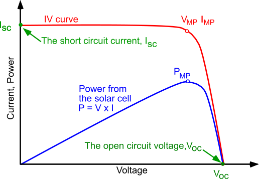
- دارای قابلیت POWERPATH است. از باتری یا آداپتور یا هر دو برای تغذیه SYS استفاده میکند و باعث میشود SYS (خروجی) همیشه روشن باشد. زمانی که آداپتور از برق کشیده شود، بهطور خودکار روی باتری سوییچ میکند بدون اینکه میکروکنترلر یا هر چیز دیگری که در خروجی هست خاموش شود.
- فناوری Narrow Voltage DC Architecture
- اگر باتری پر باشد، باتری را جدا میکند تا تخلیه و شارژ نشود و سلامت آن حفظ شود. از آداپتور برای تأمین خروجی استفاده میکند.
- اگر توان مورد نیاز شارژ باتری و توان مورد نیاز خروجی از توان آداپتور کمتر یا برابر باشد، آداپتور برای شارژ باتری و تأمین خروجی استفاده میشود.
- Dynamic Power Management
- اگر توان مورد نیاز شارژ باتری و خروجی از توان آداپتور بیشتر باشد، ولتاژ ورودی را در یک سطح ثابت نگه میدارد و نمیگذارد ولتاژ منبع تغذیه ورودی افت کند و به آداپتور فشار بیاید. در این حالت جریان شارژ باتری را کم میکند.
- اگر جریان شارژ باتری به صفر رسید اما باز هم جریان بیشتری در خروجی نیاز است، وارد حالت Supplement (کمکی) میشود. در این حالت باتری + آداپتور توان مورد نیاز SYS خروجی را تأمین میکنند.
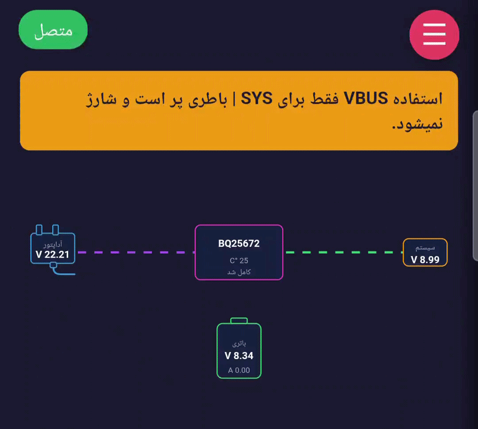
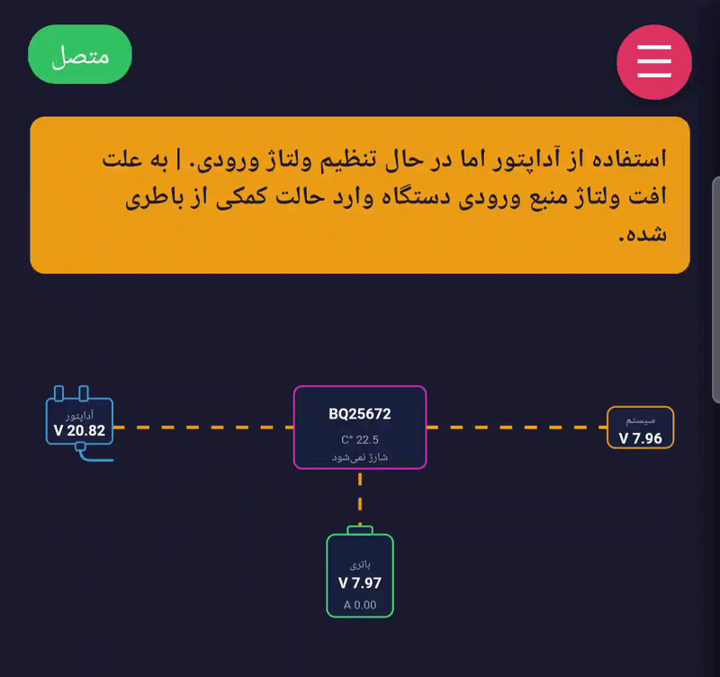
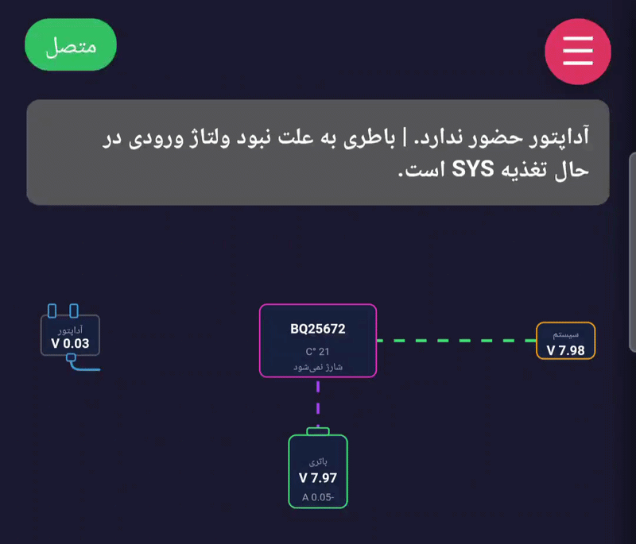


- شارژ باتری در 5 مرحله انجام میشود: شارژ قطرهای، پیششارژ، فست شارژ، شارژ با ولتاژ ثابت و شارژ تکمیلی.
- Trickle Charge (شارژ قطره): زمانی که ولتاژ باتری یا باتریها خیلی پایین است، کمتر از 2.25V برای هر سل، عملیات شارژ از این مرحله شروع میشود. در این مرحله شارژ با جریان ثابت 100mA انجام میشود. همچنین قبل از ورود به مرحله بعدی شارژ (پیششارژ) برای یک بازه زمانی ولتاژ 2.5V به ازای هر سل اعمال میکند تا برای جریانهای بالاتر در مراحل بعدی آماده شود.
- Pre-charge (مرحله پیششارژ)
- Fast Charge (شارژ سریع): در مرحله شارژ سریع باتری با جریان ثابت قابل تنظیم در برنامه وب تا 3A شارژ میشود. زمانی که باتری، برای مثال یک باتری 3 سل، به ولتاژ 9V برسد تا خود ولتاژ شارژ (12.6V) در این مرحله قرار میگیرد و شارژر با نگهداشتن جریان باتری سرعت شارژ را بالا میبرد.
- Taper Charge (شارژ با ولتاژ ثابت): بعد از اینکه ولتاژ باتری به ولتاژ شارژ خود رسید، شارژر ولتاژ شارژ باتری را ثابت نگه میدارد. با این کار باتری با پر شدن در گذر زمان جریان کمتری میکشد و زمانی که جریان شارژ باتری از آستانه ITERM (در برنامه قابل تنظیم است، پیشفرض 200mA) پایینتر شود، شارژر پایان شارژ را اعلام میکند، باتری را جدا میکند و آداپتور وظیفه تغذیه SYS (خروجی) را دارد تا باتری استفاده نشود. البته کاربر میتواند در برنامه وب از پایان شارژ جلوگیری کند تا باتری همیشه در حال شارژ باشد یا الگوریتم پایان شارژ اختصاصی خود را اعمال کند.
- Top Off Timer (تایمر تکمیلی): این تایمر یک مرحله اختیاری است که کاربر میتواند درون برنامه تحت وب آن را فعال کند. با فعال کردن این گزینه، شارژر زمانی که پر شدن باتری را حس کند این تایمر را فعال میکند و زمانی که تایمر به 0 برسد پایان شارژ را اعلام میکند. این قابلیت اختیاری برای جلوگیری از خطای ذاتی comparatorهای درون شارژر است که باعث میشود پایان شارژ 20 تا 40 درصد زودتر اعمال شود.

- تایمرهای امنیتی (Safety Timer) برای مراحل شارژ باتری.
- هر 5 مرحله شارژ تایمر امنیتی دارند. تایمر امنیتی برای جلوگیری از طولانی شدن مراحل شارژ بهدلیل شرایط غیر نرمال باتری است. یک باتری سالم باید مراحل شارژ قطره، پیششارژ، شارژ سریع و شارژ با ولتاژ ثابت را به ترتیب در 1 ساعت، 2 ساعت (پیشفرض) یا 30 دقیقه (قابل تنظیم در برنامه وب)، و 12 ساعت (برای مراحل شارژ سریع تا آخر) طی کند.
- زمانی که باتری در بازه زمانی تعیینشده به مرحله بعدی شارژ نرود:
- شارژر شارژ باتری را متوقف میکند.
- چراغ روی برد چشمک میزند و پیغام در برنامه وب ارسال میشود.

- اتصال دماسنج به برد برای شارژ بر اساس دمای باتری طبق استاندارد JEITA.
- دماسنج (همراه با ماژول ارسال میشود) داخل پک باتری قرار میگیرد تا عملیاتهایی مثل شارژ باتری و تخلیه باتری در حالت OTG کنترل شود.
- زمانی که دمای باتری بین 10 درجه تا 0 درجه باشد، جریان شارژ باتری حدود 20 درصد جریان شارژ اصلی باتری میشود. مثلاً اگر 3A بوده، 600mA تنظیم میشود تا از آسیب به باتری جلوگیری شود.
- زمانی که دمای باتری بین 45 تا 60 درجه است، در محدوده دمایی گرم مطابق استاندارد JEITA قرار دارد. در این مرحله ولتاژ شارژ را 400mV کمتر از ولتاژ شارژ اصلی قرار میدهد تا از آسیب به باتری جلوگیری کند. همچنین در برنامه وب میتوان جریان شارژ در این دما را که بهطور پیشفرض بدون تغییر است تنظیم کرد تا جریان شارژ نیز ایمن شود و به سلامت باتری کمک کند.
- زمانی که دمای باتری خیلی سرد باشد (پایینتر از 0 درجه) یا خیلی گرم باشد (بیشتر از 60 درجه)، عملیات شارژ متوقف میشود و زمانی که دمای باتری نرمال شد ادامه پیدا میکند.
- در حالت OTG اگر دمای باتری به دمای -10 درجه سانتیگراد برسد، حالت OTG به حالت تعلیق در میآید برای جلوگیری از آسیب به باتری به دلیل دمای خیلی سرد.
- در حالت OTG اگر دمای باتری به 60 درجه برسد، حالت OTG به حالت تعلیق در میآید برای جلوگیری از آسیب به باتری به دلیل دمای خیلی گرم.


- مبدل آنالوگ به دیجیتال (ADC) برای مانیتور کردن ولتاژ، جریان و دما در ورودیها، خروجی و باتری. لیست کامل ADC:
- ولتاژ ورودی (زمانی که یک آداپتور بدون MOSFETها وصل هستند)
- جریان ورودی(هم ورودی و هم در حالت OTG و PMID)
- ولتاژ باتری
- جریان باتری (شارژ و دشارژ)
- ولتاژ خروجی
- دمای خود IC
- دمای باتری
- ولتاژ ورودی 1
- ولتاژ ورودی 2
- ولتاژ روی پینهای D+ و D- (برای پورت USB)

- قابلیت Default Mode؛ کاربر نیاز به اتصال ESP32 و کنترل شارژر ندارد و همه کارها بهصورت خودکار انجام میشود.

- MOSFET داخلی BATFET با مقاومت داخلی 11 میلیاهم برای حداکثر رساندن اتلاف انرژی.
- امکان قطع کردن آداپتور از طریق جامپر روی برد یا برنامه تحت وب، بدون نیاز به برق کشیدن آن.

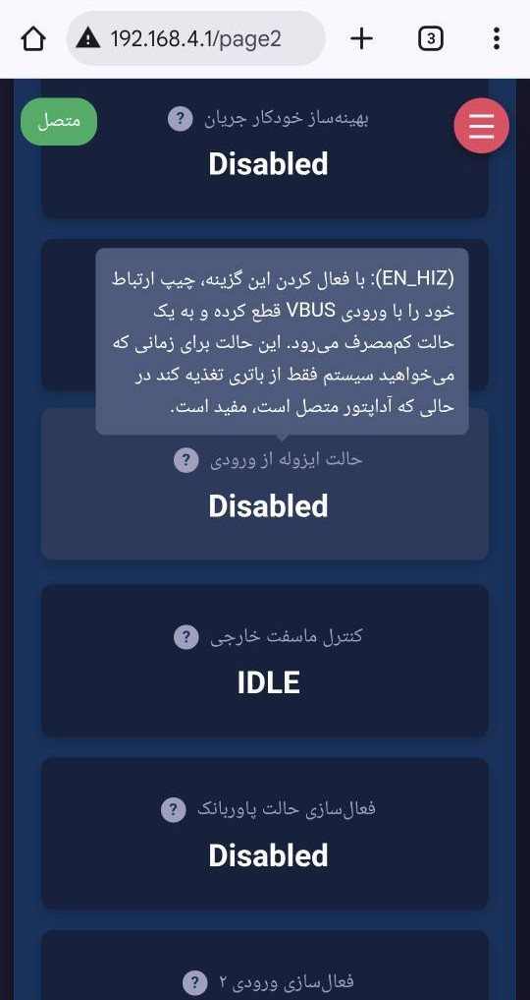
- امکان تنظیم فقط استفاده از باتری.
- اندازهگیری ولتاژ آداپتور در حالت بدون بار و تنظیم آستانه مجاز افت ولتاژ ورودی برای محافظت از اتصال کوتاه.
- تشخیص خودکار حضور باتری و منبع تغذیه ورودی.
- امکان تنظیم به حالت OTG در برنامه تحت وب. در این حالت باتری علاوه بر تغذیه خروجی (SYS) میتواند با مبدل buck-boost خود ولتاژ 2.8 تا 22 ولت را در ورودی تنظیم کند. برای کاربردهای USB OTG.
- امکان تنظیم جریان در حالت OTG
- همچنین با امکان خواندن و نوشتن روی پینهای D+ و D- توسعهدهندگان میتوانند یک پاوربانک درست کنند.
- امکان تنظیم جریان تخلیه باتری در حالت OTG

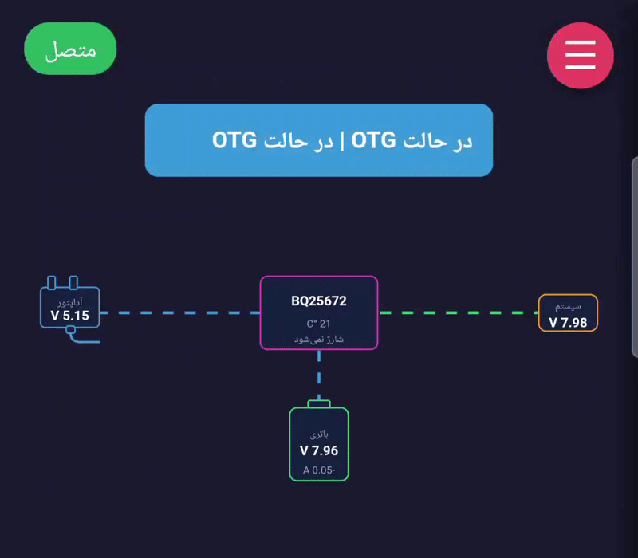
- امکان غیرفعالسازی پایان شارژ زمانی که میخواهیم باتری همیشه پر باشد یا الگوریتم اختصاصی پایان شارژ طراحی کنیم.
- چراغ روی برد برای نمایش وضعیت کلی دستگاه:
- زمانی که شارژ میشود روشن است.
- زمانی که شارژ نمیشود (باتری پر است یا شارژ غیرفعال است) خاموش است.
- زمانی که خطایی رخ داده که باعث عدم شارژ شود چراغ چشمک میزند.
- دارای پین وقفه INT و رجیسترهای STAT و FLAG برای اطلاعرسانی از وضعیت رجیسترها.
- دارای MOSFET خارجی SFET برای باتری:
- زمانی که میخواهیم دستگاه را به خواب عمیق ببریم (جریان مصرفی در این حالت 500nA، نگهداری 1 سل به مدت 708 سال)
- زمانی که میخواهیم دستگاه را به حالت نیمهخواب ببریم؛ در این حالت برد با دکمه روی برد یا از طریق I2C میتواند بیدار شود (جریان مصرفی در این حالت 17uA)
- زمانی که میخواهیم خروجی را ریست کنیم، این کار با دکمه روی برد و I2C امکانپذیر است
- برای محافظت از باتری در مقابل اضافهجریان تخلیه


- امکان ریست کردن پارامترهای تغییر داده شده در برنامه تحت وب.